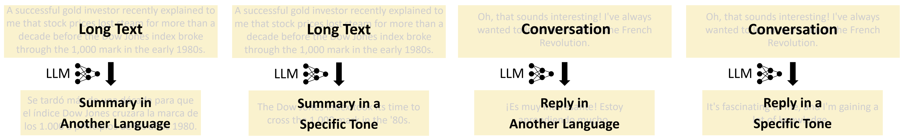
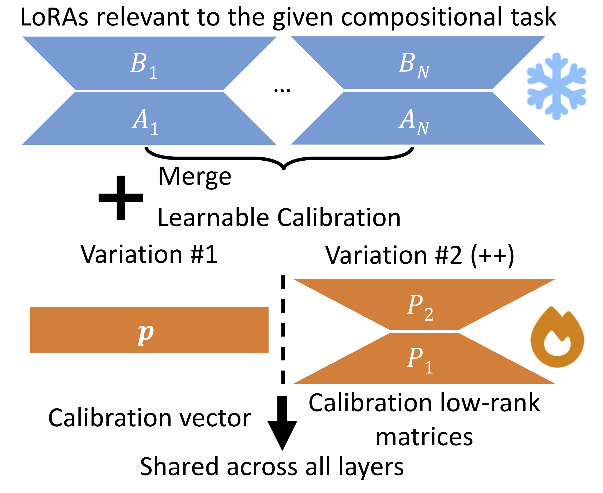
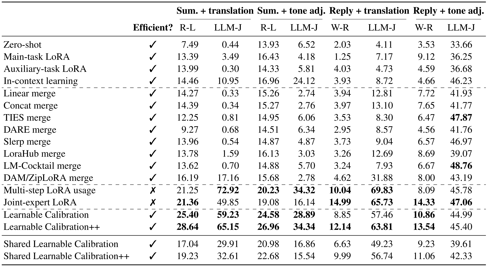
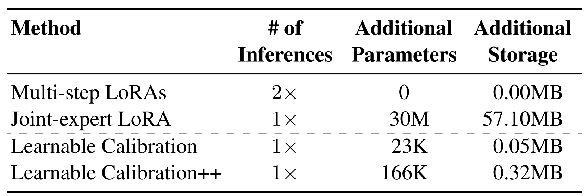

Proposed Problem Setting
Compositional multi-tasking for on-device large language models (LLMs) is a new
practical problem setting that includes tasks such as cross-lingual summarization,
where we provide a translated summary of a longer text.
- Compositional multi-tasking: perform multiple tasks simultaneously,
such as summarization and translation
- Challenge: execute all tasks jointly within a single inference pass
for optimal efficiency
- Existing approaches for on-device LLMs: either inefficient or have
low performance
- Our new benchmark: four compositional tasks, with three translation
settings and four tone variations

Figure 2: Overview of the four compositional tasks
in our benchmark.
Our Solution: Learnable Calibration
We add a small number of calibration parameters to correct initially merged
LoRAs. Variation #1 uses a calibration vector of biases, while Variation #2 (++)
uses two calibration low-rank matrices.

Figure 3: Overview of our solution to address the
proposed problem setting.
Results
Our Learnable Calibration methods achieve comparable performance to inefficient
baselines
while being significantly more efficient in terms of inferences and storage.
Similarly fast baselines, such as various
merging strategies, typically fail in compositional multi-tasking.

Table 1: Main results on our benchmark reported as
% (↑) and averaged across models and languages or tones.
Efficiency Evaluation
Our methods require only 0.08–0.56% of additional
parameters / storage, depending on the variation. Baselines not reported here,
such as Main-task LoRA and Linear Merge, are efficient but exhibit significantly
lower performance.

Table 2: Efficiency of well-performing
approaches.
Summary
We introduced the practically valuable problem
of compositional multi-tasking for LLMs in on-device settings, where
computational and storage
resources are constrained. To facilitate research in
this area, we developed a comprehensive benchmark comprising diverse
compositional
tasks. Further, we proposed Learnable Calibration as an efficient solution.
|